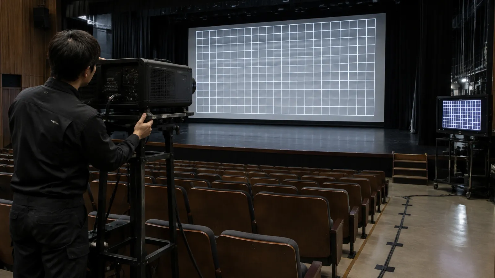

THE STORY
この現場で、何をしたか。
どんな現場か
シースルースクリーンへの投影を取り入れた舞台映像の現場。影絵演出用のプロジェクターも使う構成でした。
求められたこと
舞台の画面だけでなく、各所のモニター、ケーブルの引き回し、監視カメラの調整まで。見えない場所の仕込みが、舞台の見え方を支えます。
LOTUS VISUAL の持ち場
映像チームの一員として、映像機材まわりの仕込み・撤去に参加しました。公演全体の制作・設計・本番操作は範囲外です。
この仕事の勘所
舞台映像の仕込みは、客席から見えない配線と表示の積み重ねです。ケーブルの経路を先に決め、モニターと監視カメラで舞台の様子を各所へ届ける。整った裏側が、演出の自由を広げます。
- シースルースクリーン
- 投影機材
- 各所モニター
- 監視カメラ
案件資料で確認した機材です。
この現場の作業対象
投影設備と、その周りまで。
スクリーン・投影機材
映像を映す設備
各所のモニター
現場内の表示設備
配線・監視カメラ
ケーブルの引き回しと、監視カメラの調整
LOTUS VISUALの担当映像チームの一員として、映像機材まわりの仕込み・撤去に参加。
この現場の構成と作業
舞台の画面。
各所の表示。その間の配線。
シースルースクリーンへの投影機材と、影絵演出用のプロジェクターを使用する構成でした。現場の仕込みには、各所のモニター設置、ケーブルの引き回し、監視カメラの調整も含まれていました。
LOTUS VISUALの担当は、映像チームの一員としての仕込み・撤去です。
次の現場について
決まっていることから、
相談できます。
会場と、仕込み・撤去の日程、スタッフに頼みたい作業をお知らせください。機材リストや担当範囲がまだ決まっていなくても、分かっている条件からご相談いただけます。
映像の仕込み・撤去を相談する この事例を引き継いで相談内容を整理できます。送信前に内容を確認・編集できます。図の見方
色分けした枠が、この現場で担当した作業です。
投影機材や画面の役割を見る ↗